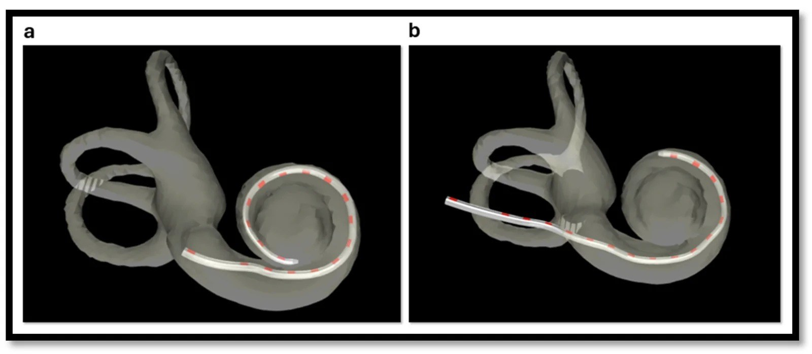
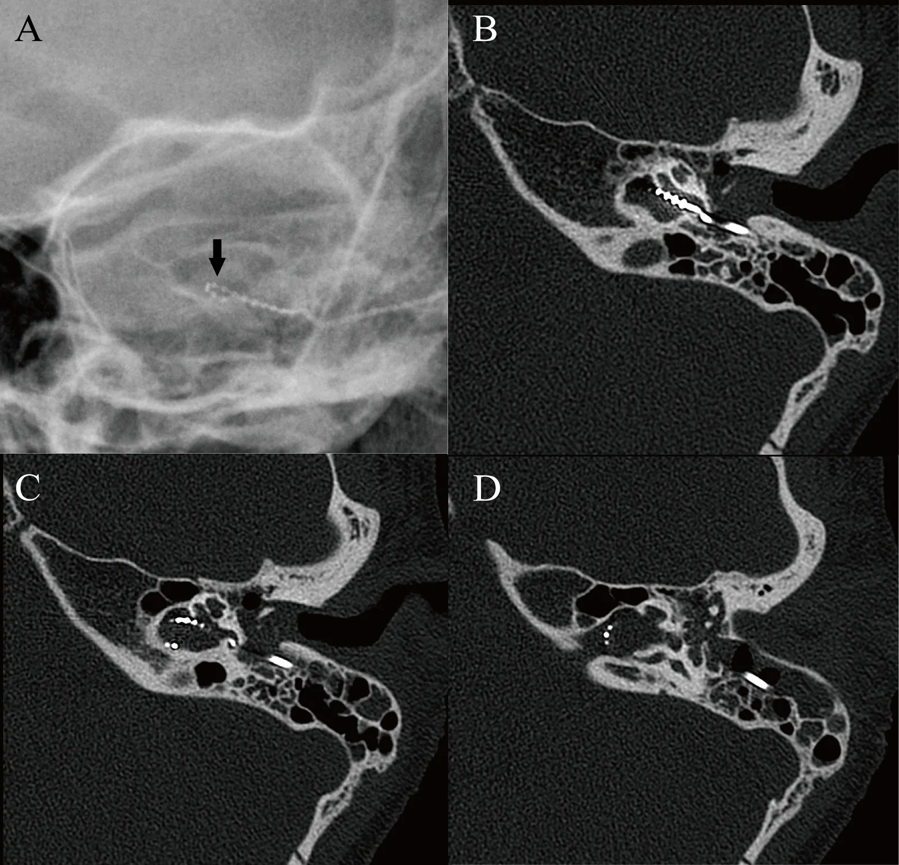
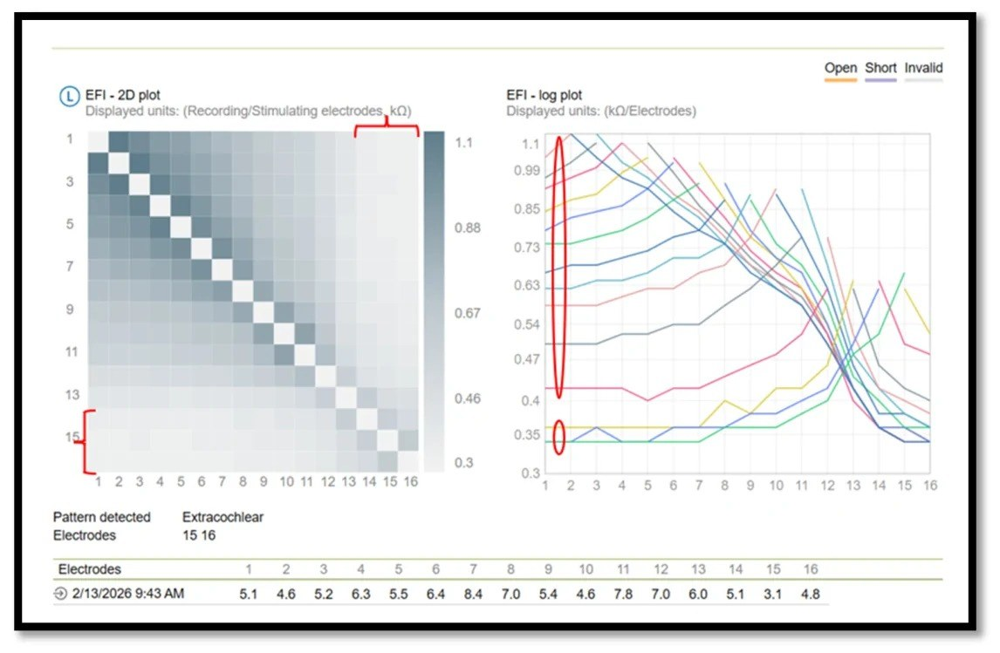
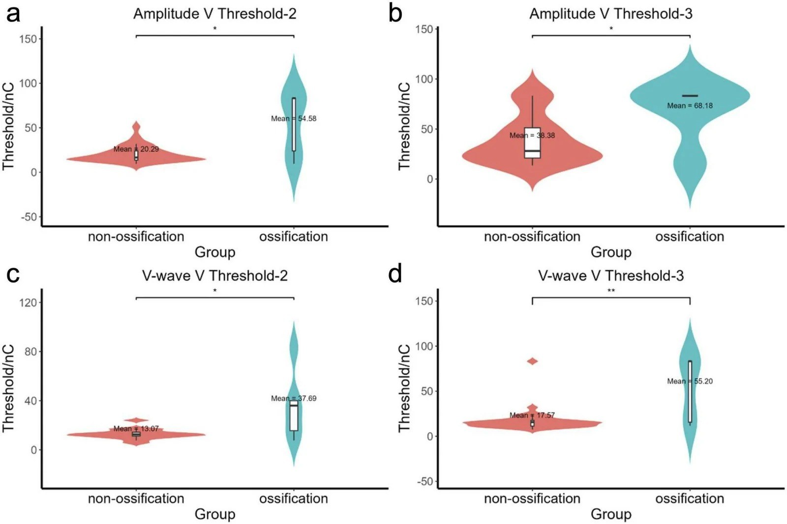

497 — Theo dõi sau cấy ốc tai ở trẻ: điện cực ngoài ốc tai, vôi hóa, thất bại thiết bị — đọc gì trên CT/EFI/EABR / Paediatric cochlear implant follow-up
Tags: pattern:dien-cuc-ngoai-oc-tai pattern:di-tru-dien-cuc pattern:voi-hoa-oc-tai pattern:that-bai-thiet-bi vung:oc-tai vung:xuong-thai-duong score:Gibson score:CAP-SIR protocol:HRCT-xuong-thai-duong protocol:X-quang-so-ngoai protocol:EFI protocol:EABR
Mức chắc chắn (certainty): tổng hợp y văn (literature synthesis) — nhóm tự biên từ: phân tích gộp 100 bản ghi/81 nghiên cứu/42.167 bệnh nhân về biến chứng cấy ốc tai (CC BY 4.0, PMC13509191), tổng quan hệ thống biến chứng ở nước thu nhập thấp–trung bình (CC BY 4.0, PMC13655758), thuật toán EFI phát hiện điện cực ngoài ốc tai (CC BY 4.0, PMC13510263), EABR ở 40 ca cấy lại có/không vôi hóa ốc tai (CC BY 4.0, PMC13643545), ca IP-III với X-quang âm tính giả – HRCT dương tính (CC BY-NC 4.0, PMC13583504), đoàn hệ cấy lại 1.465 ca (CC BY 4.0, PMC8347537), tổng quan viêm màng não sau cấy ốc tai 27.358 bệnh nhân (CC BY 4.0, PMC9994524).
Vì sao bài này quan trọng: bài 478 (ANSD) dạy chỉ định và kết quả ban đầu của cấy ốc tai; bài này là "chuyện sau cấy" — nơi quyết định trẻ có nghe được suốt đời hay mất cơ hội. Ba con số định khung: 13,7% có biến chứng (5,2% nặng), 11,7% phải cấy lại, và 3,94% thiết bị có điện cực nằm NGOÀI ốc tai — nhóm này vẫn "kích thích được" nên test chức năng thường không báo lỗi, chỉ hình ảnh/EFI mới thấy (PMC13509191, PMC8347537, PMC13510263).
1. Tổng quan bệnh học – cơ chế hình ảnh – vì sao phải theo dõi bằng 3 lớp bằng chứng
- "Thất bại" sau cấy ốc tai không phải một bệnh mà là 4 cơ chế khác nhau, cần 3 công cụ khác nhau:
- Thất bại thiết bị (device failure): cứng (hard) = không truyền được điện (mạch/điện cực đứt), mềm (soft) = thiết bị còn "chạy" nhưng hiệu năng giảm dần (impedance bất thường, ngưỡng tăng, trẻ bỏ dùng). Chiếm 45,4% (mềm) + 23,8% (cứng) = 69,2% các ca cấy lại; 2,8% toàn bộ người cấy (PMC8347537, PMC13509191).
- Điện cực ngoài ốc tai (extracochlear electrodes, EE) / di trú: điện cực nằm ngoài vòng ốc tai (chèn không hết, trượt khi đóng vỏ, chấn thương, hoặc dị dạng) → tần số gán sai vùng, kích thích ngoài ốc tai (co giật mặt, chóng mặt), giảm hiệu năng. Phát hiện bằng CT dựng hình 3D hoặc Electric Field Imaging (EFI).
- Vôi hóa–xơ hóa ốc tai (cochlear ossification): hậu viêm màng não, viêm tai giữa tái diễn; làm hẹp lòng ốc tai, chèn không hết, ngưỡng kích thích tăng, kết quả nghe–nói kém hơn.
- Biến chứng nhiễm trùng/vỏ: viêm màng não (0,74% — 202/27.358, xuất hiện 1 ngày – 72 tháng sau cấy), nhiễm vết mổ (2,3%), viêm tai giữa, cholesteatoma, di lệch magnet.
- TẠI SAO hình ảnh lại khó — 3 lý do vật lý:
- X-quang sọ thẳng/nghiêng là hình chiếu 2D: điện cực ốc tai là dải kim loại cuộn; khi cuộn trong ốc tai bình thường hay cuộn trong bể ốc tai/dịch não tủy đều cho hình xoắn giống nhau trên phim. Trong ca IP-III (mất trụ ốc tai, thông với ống tai trong), phim X-quang trong mổ không thấy bất thường, chỉ HRCT cho thấy đầu điện cực nằm trong ống tai trong (PMC13583504) — âm tính giả nguy hiểm.
- CT xương thái dương bị nhiễu kim loại (metal artifact): điện cực bằng platinum → vệt sáng/tối che lòng ốc tai. Cần lát mỏng 0,6–0,75 mm, thuật toán xương, FOV nhỏ, và dựng hình 3D để đếm điện cực; đây là cách Hình 1 (PMC13510263) phân biệt chèn đủ vs 3 điện cực ngoài.
- EFI không đo hình mà đo dòng điện: EFI ghi trở kháng chéo (cross-impedance, kΩ) giữa từng cặp điện cực; điện cực trong ốc tai có giảm dần đều theo khoảng cách (môi trường dẫn điện đồng nhất), còn điện cực ngoài nằm trong mô mềm/xương → trở kháng thấp hơn rõ và mất liên tục. Nhờ vậy EFI phát hiện EE mà không cần chụp.
- Con số nằm lòng:
- Biến chứng chung 13,7% (nặng 5,2%, nhẹ 7,8%); thất bại thiết bị 2,8%; nhiễm vết mổ nông 2,3%; chóng mặt/choáng 12,4%; đường MPTA 5,4% thấp hơn SMA 7,8%; giảm theo thời đại 8,9% (1991–2010) → 4,1% (2011–2025); nguy cơ tăng: tuổi cấy lớn, dị dạng tai trong, viêm tai giữa mạn, mổ tai trước đó, thời gian mổ dài (PMC13509191).
- Quốc gia thu nhập trung bình thấp vs cao hơn: biến chứng gộp 8,83% vs 5,08%; ở nhóm thu nhập trung bình thấp tổn thương dây VII chiếm ưu thế, nhóm cao hơn chóng mặt + thất bại thiết bị (PMC13655758).
- Cấy lại 11,7% (172/1.465): mềm 45,4%, cứng 23,8%, y tế 14%, chấn thương 8,1%, phẫu thuật 6,4%, không kết luận 2,3%; 78% là trẻ em; 70% cấy lại trong 10 năm đầu; thành công 98,8%; nghe–nói không đổi hoặc tốt hơn 85%, kém đi 15% (PMC8347537).
- EE: trong 226 người cấy có xác nhận bằng hình ảnh, có 6 ca EE; thuật toán EFI đạt độ nhạy và độ đặc hiệu 100%; ở nhóm không có hình ảnh, EFI đánh dấu 3,94% thiết bị có EE — dải điện cực thành bên (lateral wall) gặp EE nhiều hơn dải cong sẵn (pre-curved) (PMC13510263).
- Vôi hóa ốc tai: EABR kích thích được 100% ở nhóm không vôi hóa vs 80% ở nhóm vôi hóa; ngưỡng sóng V cao hơn (13,07 vs 37,69 nC ở ngưỡng 2; 17,57 vs 55,20 nC ở ngưỡng 3); điểm Gibson điện cực giữa dự báo nhận từ đơn âm tiết, R² = 0,406, p = 0,0007 (PMC13643545).
- Viêm màng não: 202/27.358 = 0,74%; 62 ca có viêm tai giữa trước đó, 47 ca có dị dạng giải phẫu; 24 ca phải mổ lại; chỉ 19 ca hồi phục hoàn toàn (PMC9994524) → tiêm phòng là can thiệp rẻ nhất trong cả bài.
2. Mẫu hình + chẩn đoán phân biệt theo kiểu "trẻ không tiến bộ" (Gamut)
- Trẻ nghe tốt rồi kém dần (mất dần hiệu năng): thất bại mềm (impedance/ngưỡng trôi), di trú điện cực (đầu cực ra khỏi ốc tai), xơ hóa tiến triển, magnet di lệch sau chấn thương/MRI.
- Trẻ chưa bao giờ đạt mốc nghe: EE/đầu cực ngoài ốc tai (đặc biệt dị dạng IP-III, Mondini), vôi hóa ốc tai (hậu viêm màng não), bất thường dây VIII (giảm sản), ANSD không phù hợp (bài 478), lập trình chưa tối ưu.
- Trẻ có triệu chứng "kích thích ngoài ốc tai": co giật mặt (dây VII bị kích thích), chóng mặt/nystagmus (kích thích tiền đình), đau — nghĩ EE/điện cực trong ống tai trong hoặc vôi hóa làm dòng điện lan.
- Trẻ sốt + sưng sau tai/đỏ vỏ: nhiễm vết mổ, áp-xe dưới vỏ, viêm tai giữa; nếu cứng gáy/sốt cao → viêm màng não (0,74%), cần chọc dò + kháng sinh ngay, không chờ CT.
- Gamut theo vị trí đầu cực (dùng khi có CT): trong ốc tai (đủ) / bể ốc tai (vestibule) / ống tai trong (IAC) / xoang tĩnh mạch, ống bán khuyên, hố sọ — vị trí quyết định mổ lại ngay hay theo dõi.
- Mnemonic "DIME": Device failure, Insertion problem (EE/migration), Meningitis/ossification, Electrode–nerve mismatch (hypoplasia/ANSD).
3. Bảng so sánh phân biệt (ma trận đối chiếu)
| Thực thể (entity) | Hình ảnh / test điển hình | Chốt vào (rule-in) | Chốt loại (rule-out) | Gợi ý xác nhận |
|---|---|---|---|---|
| Thất bại cứng (hard failure) | Không có đáp ứng điện ở mọi điện cực; CT bình thường | Mất đáp ứng toàn bộ + không kích thích được | Còn đáp ứng một phần → không phải cứng | Đo impedance + integrity test; không cần CT nếu đã mất đáp ứng |
| Thất bại mềm (soft failure) | Impedance trôi bất thường, ngưỡng tăng dần, trẻ bỏ dùng; CT thường bình thường | Hiệu năng giảm tiến triển + test chức năng bất thường | CT/EFI bình thường không loại trừ | Theo dõi 3–6 tháng, so ngưỡng cũ; cấy lại khi mất tiến bộ |
| EE / di trú điện cực | CT 3D: đầu cực ngoài vòng ốc tai; EFI: nhóm điện cực trở kháng chéo thấp, mất liên tục | Đầu cực ngoài ốc tai trên CT hoặc EFI đánh dấu EE | EFI giảm dần đều + CT đủ vòng → loại | EFI (không cần hình ảnh) + HRCT khi cần quyết định mổ |
| Vôi hóa ốc tai | HRCT: dày/xơ lấp vòng đáy, mất khoang dịch; EABR ngưỡng cao, kích thích được 80% | Vôi hóa vòng đáy trên CT + ngưỡng EABR cao | CT bình thường + EABR ngưỡng thấp → loại | HRCT 0,6 mm + EABR trong mổ; MRI T2 3D khi cần xác định dây VIII |
| Viêm màng não sau cấy | Không có dấu hiệu hình ảnh đặc hiệu sớm; CT/MRI khi có biến chứng | Sốt + cứng gáy + đau đầu ở trẻ có CI (1 ngày–72 tháng sau mổ) | Chỉ sưng tại chỗ, không sốt → nghĩ nhiễm vỏ | Chọc dò dịch não tủy + cấy (không chờ hình ảnh); không trì hoãn kháng sinh |
| Magnet di lệch | X-quang/CT: magnet lệch trục, mất đối xứng; sau MRI/chấn thương | Magnet lệch + mất dính da đầu | Magnet đúng trục + da phẳng → loại | X-quang 2 bình diện; thay magnet |

Hai ca dựng hình từ CT hậu phẫu (hệ Oto-pilot): (a) chèn đủ trong ốc tai; (b) ba điện cực nằm ngoài vòng ốc tai. Nguồn: Ashiri M et al., Audiol Res 2026 (PMC13510263) Fig. 1, CC BY 4.0.4. Protocol theo dõi + hệ điểm + quyết định
- Lịch theo dõi tối thiểu (trẻ): bật máy 3–4 tuần sau mổ; 1, 3, 6, 12 tháng trong năm đầu; sau đó 6–12 tháng/lần đến khi ổn định, rồi hằng năm — vì 70% ca cấy lại xảy ra trong 10 năm đầu và 15% trẻ kém đi sau cấy lại (PMC8347537).
- Bộ test mỗi lần khám (3 lớp):
- Điện–thiết bị: impedance từng điện cực, ECAP/ESR (electrically evoked compound action potential / evoked stapedial reflex), kiểm tra integrity; ngưỡng tăng dần hoặc impedance trôi = cờ đỏ.
- Hình ảnh: không chụp thường quy. Chỉ định: không tiến bộ sau 3–6 tháng, co giật mặt/chóng mặt, chấn thương đầu, nghi dị dạng, trước mổ lại. Ưu tiên HRCT xương thái dương 0,6–0,75 mm + dựng 3D; X-quang sọ chỉ để kiểm tra thô, KHÔNG đủ loại trừ (ca IP-III: X-quang âm tính, HRCT thấy đầu cực trong ống tai trong — PMC13583504).
- Điện sinh lý thần kinh: EABR khi nghi vôi hóa/dị dạng hoặc trước mổ lại — kích thích được 100% vs 80%, ngưỡng sóng V 13,07 vs 37,69 nC, Gibson điện cực giữa dự báo nhận từ (R² = 0,406) (PMC13643545). EABR hướng dẫn cochleostomy khi vòng đáy xơ.
- EFI (Electric Field Imaging) — "X-quang điện học": đo trở kháng chéo giữa các cặp điện cực; giảm đều theo khoảng cách = môi trường trong ốc tai; nhóm thấp bất thường = EE. Trong 226 ca có imaging, EFI Se = Sp = 100%; ở nhóm không imaging, 3,94% bị đánh dấu EE (PMC13510263). Ưu điểm: làm ngay tại buổi lập trình, không tia xạ — phù hợp trẻ nhỏ; hạn chế: không cho biết vị trí giải phẫu, nên vẫn cần HRCT khi cân nhắc mổ lại.
- Phòng bệnh — can thiệp rẻ nhất: tiêm phòng phế cầu + Hib trước/đúng lịch; điều trị viêm tai giữa triệt để (62/202 ca viêm màng não có viêm tai giữa trước đó); tư vấn tránh chấn thương đầu; MRI phải theo giới hạn của từng thiết bị (băng cố định đầu, tháo magnet khi quy định) — magnet di lệch là biến chứng của chính MRI.
- Quyết định mổ lại: mổ lại khi (1) mất đáp ứng/không dùng được, (2) EE có triệu chứng hoặc không tiến bộ nghe–nói, (3) nhiễm vỏ/áp-xe không đáp ứng kháng sinh, (4) magnet di lệch. Thành công 98,8%, nhưng 15% kém đi → tư vấn trước mổ rằng cấy lại không bảo đảm tốt hơn.
flowchart TD
A[Trẻ sau cấy ốc tai không tiến bộ hoặc kém đi] --> B[Kiểm tra thiết bị: impedance + ECAP/ESR]
B --> C{Đáp ứng điện bình thường?}
C -->|Không| D[Thất bại cứng: mổ lại]
C -->|Có| E[EFI tại buổi lập trình]
E --> F{EFI đánh dấu điện cực ngoài ốc tai?}
F -->|Có| G[HRCT xương thái dương 0,6 mm + dựng 3D]
F -->|Không| H{Ngưỡng tăng dần hoặc trẻ kém dần?}
H -->|Có| I[Thất bại mềm: theo dõi 3-6 tháng, cân nhắc cấy lại]
H -->|Không| J[Đánh giá nghe-nói: CAP, SIR, từ đơn]
G --> K{Đầu cực trong ốc tai?}
K -->|Không| L[Mổ lại chỉnh điện cực]
K -->|Có| M[Vôi hóa hoặc dị dạng: EABR trước mổ lại]
5. Biến thể bình thường và cạm bẫy
- Cạm bẫy 1 — tin X-quang sọ "không thấy bất thường": phim 2D không phân biệt cuộn trong ốc tai với cuộn trong ống tai trong/bể ốc tai; ca IP-III đã bị bỏ qua cho đến khi HRCT (PMC13583504). Quy tắc: X-quang chỉ sàng lọc, không dùng để loại trừ ở trẻ có dị dạng.
- Cạm bẫy 2 — CT bình thường = thiết bị tốt: thất bại mềm có CT bình thường và EFI bình thường; chẩn đoán dựa trên xu hướng ngưỡng/impedance theo thời gian, không dựa một lần đo.
- Cạm bẫy 3 — EFI bất thường = phải mổ: EFI có thể bị nhiễu do mô xơ quanh điện cực hoặc dải điện cực thành bên (vốn gặp EE nhiều hơn); quyết định mổ cần HRCT + lâm sàng, không dựa EFI đơn thuần.
- Cạm bẫy 4 — vôi hóa ốc tai "không thấy" trên CT sớm: giai đoạn đầu là xơ (fibrosis) — không cản quang, CT có thể bình thường; khi đã vôi hóa mới thấy dày vòng đáy. MRI T2 3D giúp thấy mất tín hiệu dịch ốc tai trước khi vôi hóa.
- Cạm bẫy 5 — coi "trẻ không hợp tác" là nguyên nhân: trước khi kết luận tâm lý, phải loại trừ EE, thất bại mềm, vôi hóa; trong loạt 226 ca, 6 ca EE được xác nhận bằng hình ảnh nhưng nhiều ca chỉ có EFI mới phát hiện.
- Cạm bẫy 6 — bỏ qua tiêm phòng: 0,74% viêm màng não, xuất hiện tới 72 tháng sau cấy, 24/202 phải mổ lại, chỉ 19 hồi phục hoàn toàn — đây là biến chứng phòng được.
- Cạm bẫy 7 — nhiễu kim loại trên CT làm "mất" vòng ốc tai: dùng lát 0,6 mm, FOV nhỏ, thuật toán xương, đọc 2 bình diện trực giao và dựng 3D; đừng kết luận "chèn đủ" chỉ vì không thấy đầu cực.
6. Tự lượng giá — Blind Quiz
Ca 1 — Bé trai cuối tuổi nhi đồng, điếc sâu hai bên, dị dạng IP-III. Trong mổ X-quang sọ: điện cực cuộn, không gãy, không gập. Bé không đạt mốc nghe sau 6 tháng:

- Câu hỏi: X-quang có loại trừ được đặt sai vị trí không? HRCT cho thấy gì? Vì sao IP-III dễ sai?
Bấm để hiện đáp án (findings + chẩn đoán)
- (A) X-quang sọ trong mổ: điện cực cuộn, hơi dẹt, KHÔNG thấy gập/gãy/lệch → âm tính giả.
- (B–D) HRCT: điện cực đi qua thành bên vòng đáy nhưng đầu cực nằm trong ỐNG TAI TRONG — ngoài ốc tai.
- Vì sao IP-III: mất trụ ốc tai + thông ốc tai với ống tai trong (đột biến POU3F4) → điện cực trượt vào IAC mà vẫn giữ hình xoắn trên phim 2D.
- Kết luận: X-quang không loại trừ; cần HRCT trong mổ ở mọi ca dị dạng để xác nhận vị trí trước khi đóng vết mổ.
- Nguồn ảnh: Zhao Z et al., BMJ Case Rep 2026 (PMC13583504) Fig. 1, CC BY-NC 4.0 — nguyên bản.
Ca 2 — Trẻ 4 tuổi, cha mẹ nói "vẫn nghe nhưng kém hơn trước". Impedance bình thường. EFI:

- Câu hỏi: Đọc 2 đồ thị này thế nào? Kết luận gì? Bước tiếp theo?
Bấm để hiện đáp án
- Heat map: vùng xám đậm = trở kháng chéo cao (điện cực trong ốc tai); vùng nhạt ở điện cực 15–16 = trở kháng thấp bất thường.
- Đường cong: hai nhóm tách biệt — nhóm trong ốc tai giảm dần đều, nhóm điện cực đáy thấp và gần như phẳng; phần mềm ghi "Pattern detected: Extracochlear, electrodes 15–16".
- Kết luận: điện cực ngoài ốc tai (EE) — giải thích kém đi dù impedance bình thường (EE vẫn dẫn điện).
- Bước tiếp: HRCT 0,6 mm + dựng 3D xác định vị trí; nếu đầu cực ngoài ốc tai + không tiến bộ → mổ lại chỉnh; nếu chỉ 1–2 điện cực và trẻ vẫn tiến bộ → tắt điện cực đó trong map và theo dõi.
- Nguồn ảnh: Ashiri M et al., Audiol Res 2026 (PMC13510263) Fig. 3, CC BY 4.0.
Ca 3 — Hai trẻ cấy lại: một có vôi hóa ốc tai sau viêm màng não, một không. EABR trong mổ:

- Câu hỏi: Nhóm nào có ngưỡng cao hơn? Điều đó nói gì về tiên lượng và về kỹ thuật mổ?
Bấm để hiện đáp án
- Ngưỡng cao hơn ở nhóm vôi hóa: 37,69 vs 13,07 nC (ngưỡng 2, p < 0,05) và 55,20 vs 17,57 nC (ngưỡng 3, p < 0,01) → cần dòng điện lớn hơn để đạt cùng đáp ứng.
- Tỷ lệ kích thích được: 100% (không vôi hóa) vs 80% (vôi hóa) — 20% còn lại không có đáp ứng dù đã đặt điện cực.
- Tiên lượng: điểm Gibson điện cực giữa dự báo nhận từ đơn âm tiết (R² = 0,406) — dùng để tư vấn kỳ vọng trước mổ lại.
- Kỹ thuật: EABR hướng dẫn vị trí cochleostomy (chọn chỗ còn lòng ốc tai), và giải thích vì sao trẻ vôi hóa cần map khác.
- Nguồn ảnh: Jin Y et al., Front Neurosci 2026 (PMC13643545) Fig. 3, CC BY 4.0.
Bài liên quan chéo
- 400 – Tổng quan Mắt & thị giác
- 437 – Teo thị kèm điếc: DOA+/OPA1 & WFS1
- 478 – Điếc tiếp âm (ANSD) ở trẻ
- 479 – Tư vấn di truyền & xử lý VUS trong teo thị/điếc
- 743 – Chảy máu cam nặng/tái diễn ở trẻ
Không dùng để chẩn đoán độc lập khi chưa có người hướng dẫn.